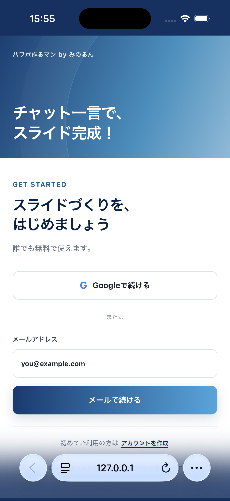

モックの案Aを採用。リード文はご指示どおり「誰でも無料で使えます。」に。
変えたのは文言3か所と、最下部への新規導線1行です。ボタンの構成・画面遷移・CSSはそのままです。
BEFORE
WELCOME BACK
続きをはじめましょう
Googleまたはメールアドレスで続けられます。
（新規登録の導線なし。メールを入れて次の画面へ進むと初めて現れる）
AFTER
GET STARTED
スライドづくりを、
はじめましょう
誰でも無料で使えます。
初めてご利用の方は アカウントを作成
| 箇所 | Before | After | 意図 |
|---|---|---|---|
| 小見出し | Welcome back | Get started | 再訪前提の挨拶をやめ、初訪問でも成立する語にした |
| 見出し | 続きをはじめましょう | スライドづくりを、はじめましょう | 何をはじめるのかを明示。「続き」は既存ユーザーにしか通じない |
| リード文 | Googleまたはメールアドレスで続けられます。 | 誰でも無料で使えます。 | 手段の説明はボタン自体が語るので、初訪問が一番知りたい条件に置き換え |
| 最下部 | （なし） | 初めてご利用の方は アカウントを作成 | 次の画面にあった導線を前倒しし、入口を最初の画面で見せた |
見出しは <br /> で明示的に2行にしています。画面幅による折り返し位置のブレを防ぐためで、モックと同じ組みになります。
initial ブロックの4行と、新規登録画面の戻り先の分岐です。
- <p className="auth-eyebrow">Welcome back</p> - <h2>続きをはじめましょう</h2> - <p className="auth-lead">Googleまたはメールアドレスで続けられます。</p> + <p className="auth-eyebrow">Get started</p> + <h2>スライドづくりを、<br />はじめましょう</h2> + <p className="auth-lead">誰でも無料で使えます。</p> （中略：Googleボタン、区切り、メールアドレス入力フォーム） <button className="auth-action auth-primary" type="submit">メールで続ける</button> </form> + <div className="auth-new-user">初めてご利用の方は <button className="auth-text-button" type="button" + onClick={() => { setSignupFrom('initial'); setState('signup'); }}>アカウントを作成</button></div>
auth-new-user はメール画面ですでに使っている既存クラスなので、CSSの追加はありません。
新規登録へ入る経路が2つになったため、戻り先を覚える状態を1つ足しました。これが無いと、最初の画面から登録へ進んだ人が「戻る」でメールアドレス入力後の画面に落ちて、空欄のメール欄が表示されます。
+ // 新規登録はメール入力前後のどちらからも入れるため、戻り先を覚えておく。 + const [signupFrom, setSignupFrom] = useState<AuthState>('email'); // 新規登録画面の戻るボタン - <button className="auth-back" onClick={() => setState('email')}>← 戻る</button> + <button className="auth-back" onClick={() => setState(signupFrom)}>← 戻る</button>
iPhone 17 Simulator と PC幅の両方で表示し、遷移も実際にクリックして確かめました。

| 確認項目 | 結果 |
|---|---|
| ESLint | エラーなし |
| ビルド | 成功（2.86秒） |
| テスト | 35件すべて通過（AuthScreen の3件を含む） |
| iPhone 実機表示 | 上端・余白・横幅とも問題なし |
| PC幅（1280px） | 1画面に収まる。左のブランド面も従来どおり |
| アカウント作成へ遷移 | 登録画面が開く |
| 登録画面から戻る | 最初の画面へ戻る（メール画面へ落ちない） |
本番へはまだ反映していません。 mainへのpushはリポジトリの正本を更新するだけで、AWSは変わりません。反映するときは deploy-prod スキル経由で diff を確認してから流します。
今回は直していません。判断だけいただければ、次のついでに入れられます。
最下部の「アカウントを作成」は、iPhoneではSafariのアドレスバーにわずかに重なる位置にあります。少しスクロールすれば見えますが、初訪問の人に見せたい導線としては、あと一歩ファーストビューに入りきっていません。
入れきるなら、リード文と最初のボタンの間の余白（現在28px）を詰めるのが影響の少ない手です。ただしPC幅では現状で問題なく収まっているため、スマホ幅だけの調整になります。